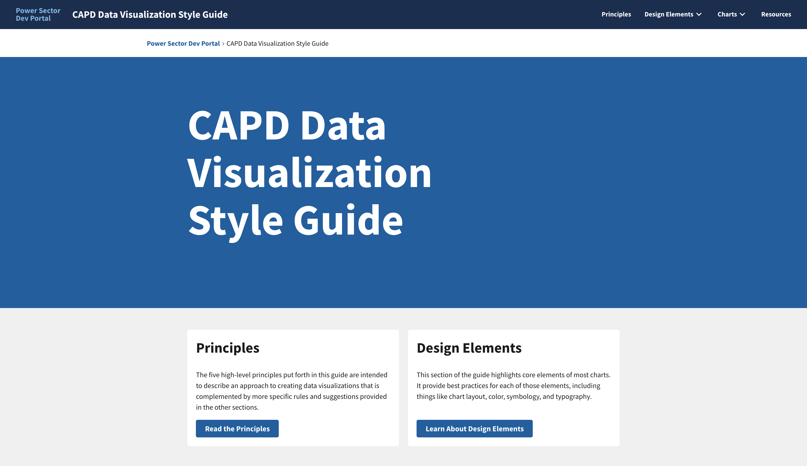
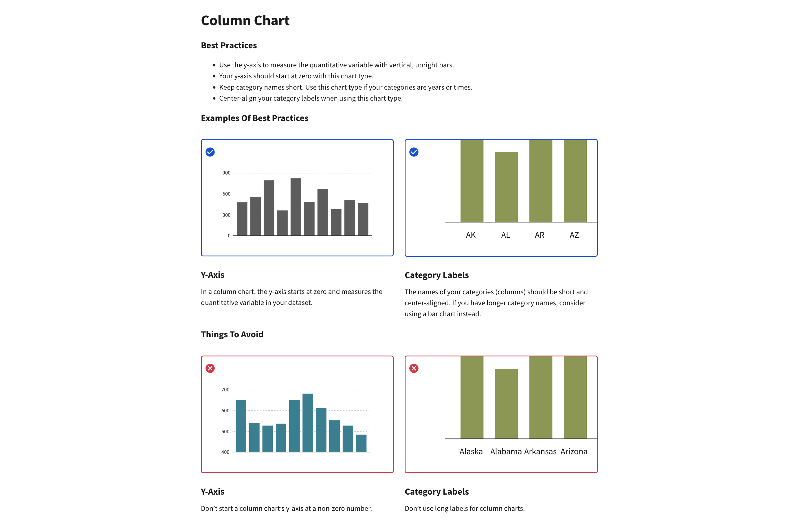
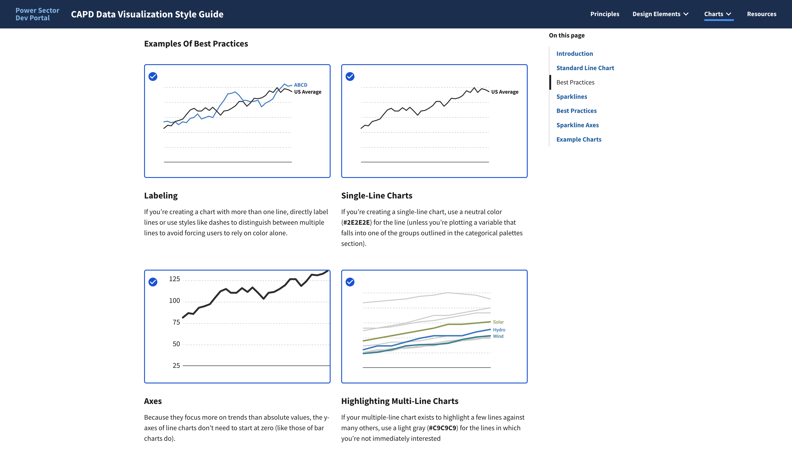
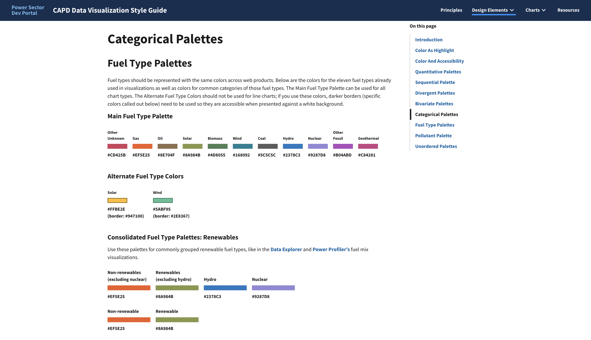
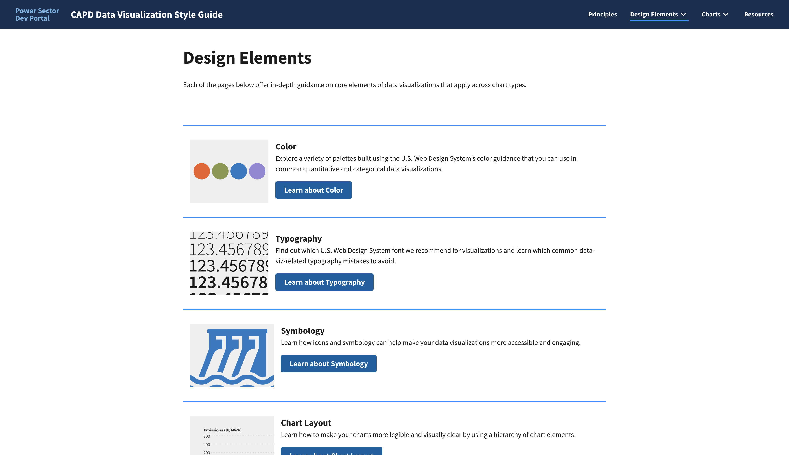

EPA Data Visualization Style Guide: A Case Study

Click the image above to visit the final site
Context
Background
The U.S. Environmental Protection Agency (EPA)'s Clean Air and Power Sector team (CAPD) came to us to help them develop a set of standards for data visualizations and data products across their sites--the Power Sector Dev Portal. This Data Visualization Style Guide is a part of the portal: For it, we created a robust set of data visualization best practices tailored to their unique needs. Now that it's out in the wild, EPA employees and contractors alike can use it to produce new visualizations or refine old ones.
Team and Roles
I served as lead designer and worked with a front-end developer to produce the final React app.
Project Process

Phase 1: Research and Content
The clients came to us on this project with numerous examples of visualization style guides that they liked and wanted us to emulate. To that end, I did some initial market research and identified what was working well (and what wasn't) about each of the examples they presented to us and others that I found.
With these findings in hand, I led discussions with the clients to align on the most important content for their guide. We knew that the clients would be our most important user group, but I was also able to use other team members as user proxies because, as contractors, we were also intended to benefit from the guide.
Key Phase 1 Questions
1
What kinds of data do the clients work with most often?
2
What guidelines do those data necessitate?
3
How detailed does the content need to be?
Key Phase 1 Insights
1
The guide needs to address fuel types and common pollutants.
These two types of data came up again and again while talking to the clients about what kinds of visualizations they currently make and would like to make. This meant that our guidance had to accommodate working with those data types first and foremost.
2
The guide needs to help standardize existing data visualizations.
In addition to working with fuel types and pollutants, we also heard that the clients struggled to choose colors for these common data types. As a result, there were inconsistent presentations of these data across the clients' sites. We knew we would have to help rectify this in our guide to help make existing content more trustworthy and easy to understand.
3
The guide needs to find a balance between helpful and unique.
An important consideration that we grappled with early on was when to rely on guidance others had already put together and when to write our own. We didn't want to produce duplicative content, but we also didn't want our guide to be made up entirely of links to other sites.
Phase 2: Design
Once we had finalized the content of the guide (through multiple iterations and revisions), we began to plan for the creation of a site. While we normally would have planned for this from the project's start, the clients were unsure whether they wanted a static PDF or a website as the host for the guide until they saw the content and agreed it would be best suited to a website that we could continually update and improve.
In this phase, I worked with our front-end developer to produce an information architecture for the entire Power Sector Dev Portal, of which our guide would be a part, to ensure consistency and an easy-to-use experience.
After our IA for the site was approved, I began to develop wireframes. As I did this, our developer began to explore CMS options for the site, though in the end we wound up building a React app from scratch.
Key Phase 2 Questions
1
How can we make the guide easy to understand?
2
Is the guide helpful?
Key Phase 2 Insights
1
Repetition can be useful.
We found out early on during client reviews that what we deemed a "repetitive" organization--listing best practices in text form, followed by visual examples and counter-examples--was actually the easiest way for them to parse the information. We incorporated that structure into the rest of the site: wherever possible, we try to show both how you should do something and also how you should not do it.
2
Testing with a specific use case helped us improve.
After the guide's content was nearly finalized, we tested its efficacy by using it to build a custom ggplot2 theme for R. The clients had told us that they frequently use R, so this test helped us ensure the guidance we were producing was providing practical help when building a chart, not just abstract best practices.
Example Phase 2 Materials

An example of the "repetitive" structure that our clients found helpful.
Phase 3: Development
Development for this site was straightforward. As I finalized page wireframes and elements of the site, I reviewed them with our team and the clients, after which our developer implemented them.
The entire Power Sector Dev Portal is now live, with more content already in the works, and the Data Visualization Style Guide is available here: CAPD Data Visualization Style Guide. Our next steps are to conduct a more comprehensive user test of the site, and then to use the guide as a way to audit, standardize, and improve CAPD's existing data visualizations and products.
Key Phase 3 Questions
1
How can we ensure the guide continues to evolve?
2
What are our next steps?
Key Phase 3 Insights
1
Contributions to the guide should be democratized.
By publishing the site from a public repository, we left an open door for others to make changes and updates to the content of the guide. To make that process even easier, our team worked with the clients to develop an easy-to-use markdown system for making those updates.
2
Real-world feedback always beats internal feedback.
Though we had tested the content and the site with colleagues both internally and at the EPA, the real test of the guide will come when we ask people entirely unfamiliar with the project to use it. Beyond this, testing with outside users will also allow us to make improvements to the structure of the DVSG site and gather input around what additions would be useful for the Dev Portal as a whole.
The Final Site

This screenshot shows the Examples of Best Practices section of the Line Charts page.

This screenshot shows the various color palettes we developed for commonly used fuel types.

This screenshot shows the Design Elements page.